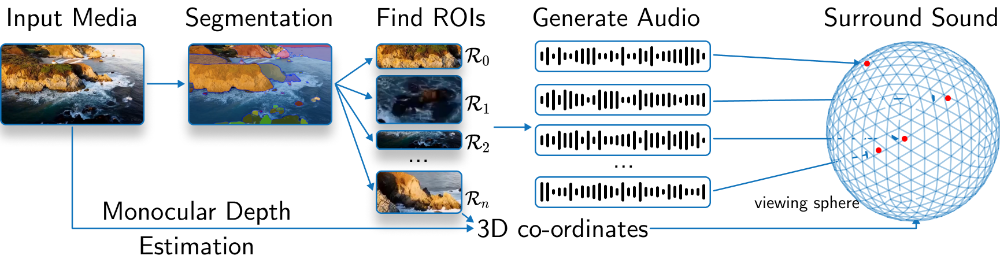
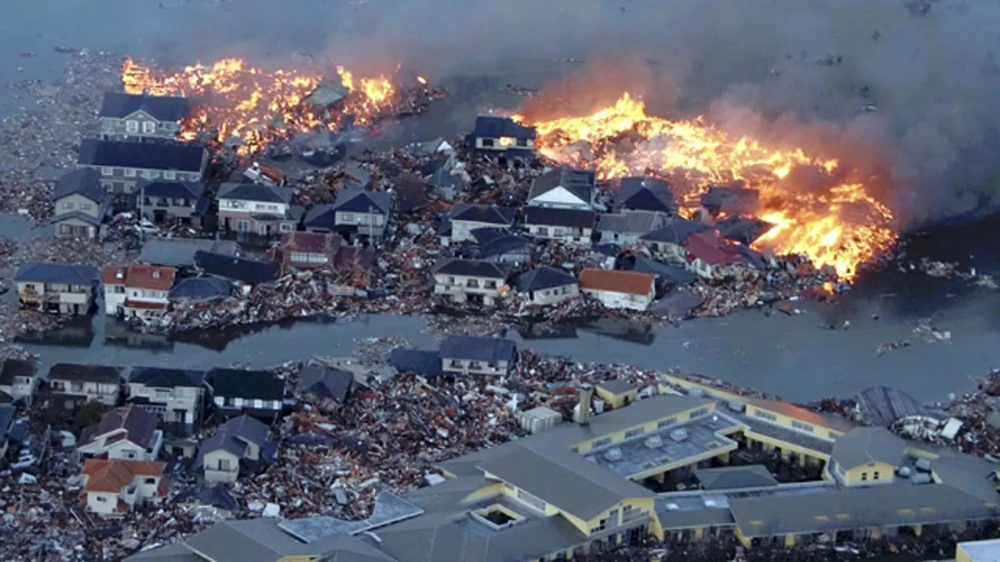
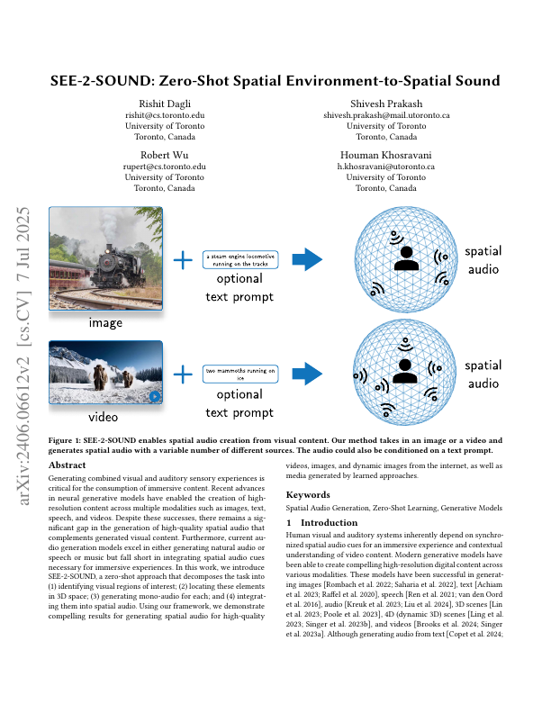

Mono Audio
A mono audio clip.
Hover to play.
SEE-2-SOUND generates spatial audio from images, animated images, and videos.
Hover to play.
Hover to play.
Generating combined visual and auditory sensory experiences is critical for the consumption of immersive content. Recent advances in neural generative models have enabled the creation of high-resolution content across multiple modalities such as images, text, speech, and videos. Despite these successes, there remains a significant gap in the generation of high-quality spatial audio that complements generated visual content. Furthermore, current audio generation models excel in either generating natural audio or speech or music but fall short in integrating spatial audio cues necessary for immersive experiences. In this work, we introduce SEE-2-SOUND, a zero-shot approach that decomposes the task into (1) identifying visual regions of interest; (2) locating these elements in 3D space; (3) generating mono-audio for each; and (4) integrating them into spatial audio. Using our framework, we demonstrate compelling results for generating spatial audio for high-quality videos, images, and dynamic images from the internet, as well as media generated by learned approaches.
A mono audio clip.
Hover to play.
A spatial audio clip generated by SEE-2-SOUND.
Hover to play.

SEE-2-SOUND consists of three main components: source estimation, audio generation, and surround sound spatial audio generation.
In the source estimation phase, the model identifies regions of interest in the input media and estimates their 3D positions on a viewing sphere. It also estimates the monocular depth map of the input image to further refine the spatial information.
Next, in the audio generation phase, the model generates mono audio clips for each identified region of interest, leveraging a pre-trained CoDi model. These audio clips are then combined with the spatial information to create a 4D representation for each region.
Finally, the model generates 5.1 surround sound spatial audio by placing sound sources in a virtual room and computing Room Impulse Responses (RIRs) for each source-microphone pair. Microphones are positioned according to the 5.1 channel configuration, ensuring compatibility with prevalent audio systems and enhancing the immersive quality of the audio output.


University of Toronto
@InProceedings{dagli2024see2sound,
author="Dagli, Rishit and Prakash, Shivesh and Wu, Robert and Khosravani, Houman",
title="SEE-2-SOUND: Zero-Shot Spatial Environment-to-Spatial Sound",
booktitle="Proceedings of the Special Interest Group on Computer Graphics and Interactive Techniques Conference Posters",
year="2025",
publisher="Association for Computing Machinery",
address="New York, NY, USA",
pages="63:1--63:2",
doi="10.1145/3721250.3742965",
isbn="979-8-4007-1549-5"
}